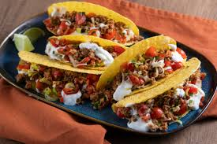
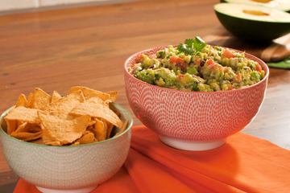
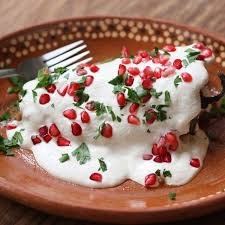
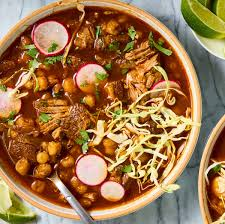
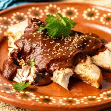
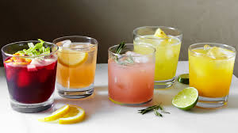

Tacos
Prato tradicional mexicano com tortillas recheadas de carne, vegetais e molhos.
- Tortillas de milho
- Carne bovina ou frango
- Cebola e coentro
- Molho picante (opcional)

Guacamole
Molho à base de abacate, perfeito como acompanhamento ou entrada.
- Abacate maduro
- Tomate
- Cebola
- Suco de limão
- Coentro
- Sal e pimenta

Enchiladas
Tortillas recheadas com carne ou queijo, cobertas com molho picante e assadas.

Chiles en Nogada
Pimentões recheados com carne e frutas, cobertos com molho de nozes, prato típico do México.
- Pimentões poblanos
- Carne moída
- Frutas (maçã, pêra, durazno)
- Molho de nozes
- Sementes de romã

Pozole
Sopa tradicional mexicana feita com milho hominy, carne e especiarias.
- Milho hominy
- Carne de porco ou frango
- Cebola, alface e rabanete para guarnição
- Limão e orégano

Mole Poblano
Molho espesso e rico em sabor, feito com pimentas, chocolate e especiarias, servido sobre carne.
Torta Tres Leches
Doce tradicional mexicano, um bolo embebido em três tipos de leite, muito úmido e saboroso.

Agua Fresca
Bebida refrescante à base de frutas, água e açúcar, perfeita para dias quentes.
- Frutas frescas (melancia, morango ou limão)
- Água gelada
- Açúcar a gosto
- Gelo